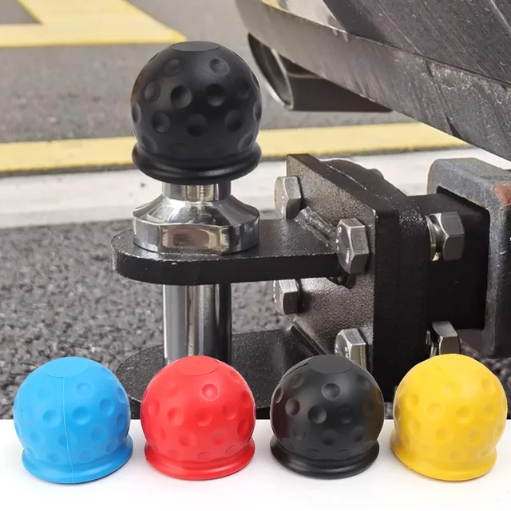
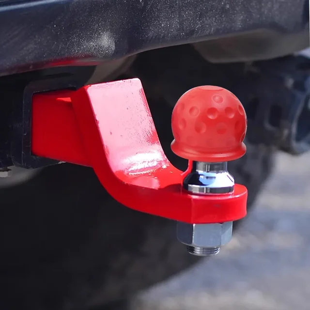
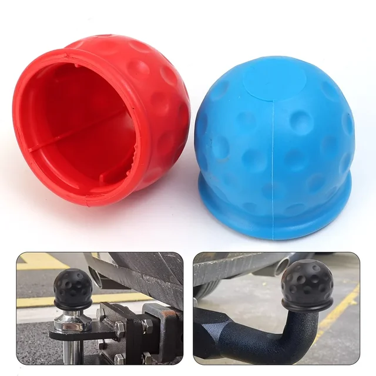
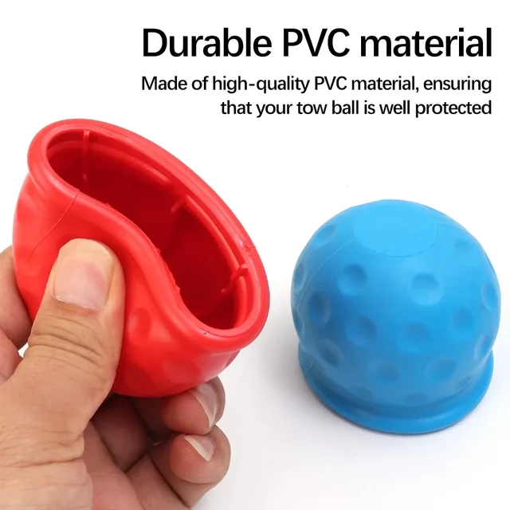
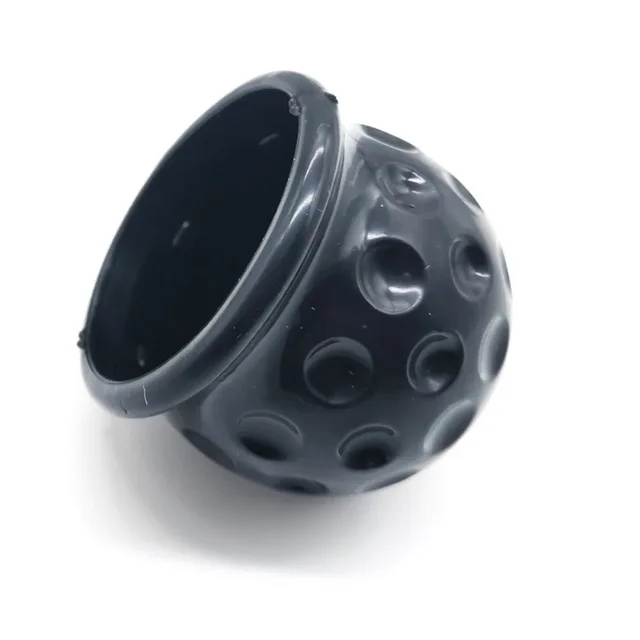
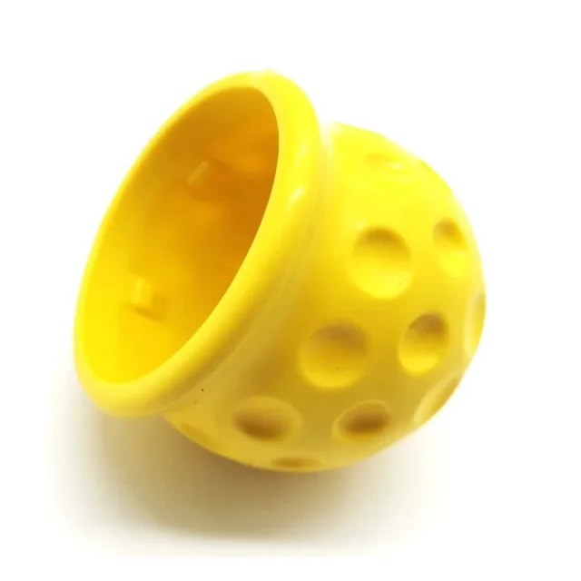
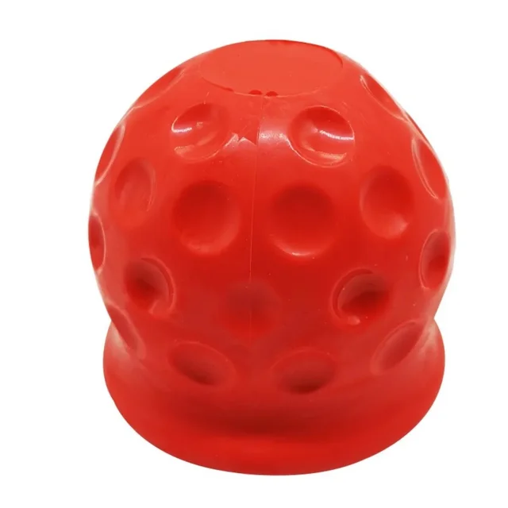
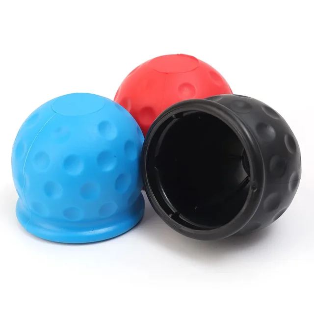

Product Description:
About this item:
【DURABLE PVC MATERIAL】: Our PVC Ball Cover is crafted from premium PVC material, renowned for its resilience and durability. This ensures that your trailer ball is well-protected against the elements and everyday wear and tear.
【COLORFUL OPTIONS】: This protective ball cover comes in a variety of colors - black, yellow, blue, and red - allowing you to choose the one that best matches your vehicle or personal preference for a coordinated look.
【EASY TO INSTALL】: The ball cover is designed for quick and easy installation. It simply slips over your trailer ball, providing a secure fit without the need for any additional fastening or complex procedures.
【FUNCTIONAL PROTECTION】: It serves as an effective barrier against dust, dirt, and potential scratches, safeguarding your trailer ball and maintaining its functionality for a longer period.
【COMPATIBLE WITH STANDARD BALL SIZES】: This ball cover is designed to fit most standard trailer ball sizes, ensuring broad compatibility with various vehicle types and trailer setups.
【100% SATISFACTION SHOPPING】: We stand behind our product with a satisfaction guarantee. If you have any issues or need assistance, please "Contact Seller". Our customer service is dedicated to ensuring your shopping experience is a positive one.
【UV PROTECTION】: The PVC material offers UV resistance, protecting the cover from sun damage and keeping it looking new for longer.
【WEATHER-RESISTANT】: This ball cover is made to withstand different weather conditions, ensuring your trailer ball remains protected regardless of rain, snow, or shine.
【CONVENIENT STORAGE】: When not in use, the cover can be easily removed and stored, saving space and providing added convenience for vehicle owners.
In summary, our PVC Ball Cover for Trailer Hitch Balls is a durable, colorful, and practical accessory that offers reliable protection for your trailer ball. Its easy installation, weather resistance, and satisfaction guarantee make it an essential item for anyone who uses a trailer hitch.
Product Details:
Material: PVC
Category: protective cover
Color: black, yellow, blue, red
Size: 6*6*5.5cm
Applicable: cars
Package includes: 1*Protective Cover







